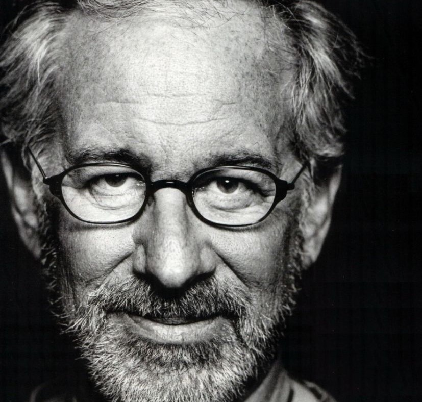
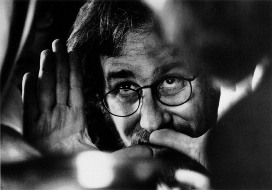

Biografía
El director, guionista y productor Steven Allan Spielberg nació el 18 de diciembre de 1946 en Cincinnatti, Ohio (Estados Unidos) De formación autodidacta, comenzó a rodar cortos a comienzos de los años 60 (debutando con un film del Oeste titulado “The Last Gun”) hasta que a los 18 años dirigió y escribió su primer largometraje, “Firelight” (1964), extenso título de ciencia-ficciónEn Los Angeles, Steven Spielberg intentó ingresar sin éxito en la Universidad de Southern California para estudiar Cinematografía. Tras dos tentativas infructuosas, logró ser admitido en la Universidad del Estado de California en Long Beach.En el año 2002 recibió finalmente su diploma de graduación.